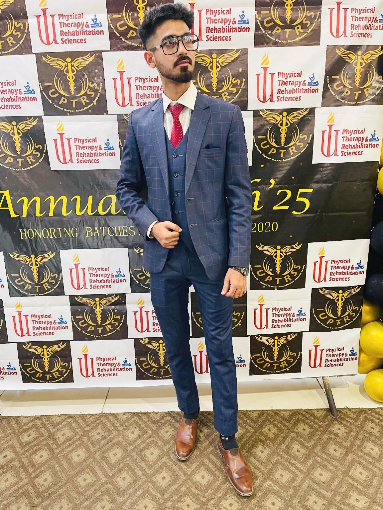

Dr. Muhammad Huzaifa PT
Email: muham.huzaifa89@gmail.com
Phone: +92 325 9282956
Location: Karachi, Sindh, Pakistan
Profession: Physical Therapist | Rehabilitation Expert | Health Educator
About Me
I’m a licensed Physical Therapist and passionate Science Tutor based in Karachi. I specialize in orthopedic, neurological, and pulmonary rehabilitation. I’m also certified in disease-based physiotherapy, fall prevention, and clinical coaching. As a dedicated educator, I teach Biology and Chemistry to SSC and FSC students. Let’s connect and enhance lives together!
Education
- Indus University – Doctor of Physical Therapy (DPT), GPA: 3.78 (2020–2025)
- Govt. Degree Boys College No.1 – Intermediate (2018–2020)
- Muslim Public High School – Matriculation (2016–2018)
Internships & Clinical Practice
- Intern – Alkhidmat Hospital (Apr 2025–Present)
- Intern – Shamsi Hospital (Feb–May 2025)
- Intern – NICH (Mar 2025)
- Intern – Abbasi Shaheed Hospital (Dec 2024)
- Intern – Saifee Hospital (May–Jun 2024)
- Intern – Dr. Essa Laboratory (Sep 2023)
- Intern – ISM Hospital (Dec 2022)
Certifications
- Red Flags in Back Pain – Elite Rehab Clinic (2025)
- Sport Injuries Webinar – Elite Rehab Clinic (2025)
- Differential Diagnosis & Physio – OrthoFlex Society (2025)
- Fall Prevention – DUHS (2025)
- Heart Rate Variability – DUHS (2025)
- Blood Donation Camp – Fatimid Foundation (2024)
- Basic Resuscitation Skills – Sindh Rescue 1122 (2024)
Websites